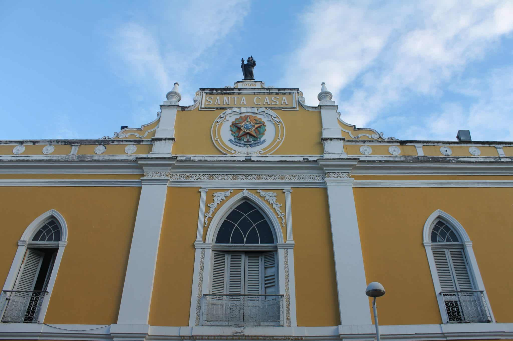

Igreja Madre de Deus
Na rua atrás do Cais da Alfândega (rua Madre de Deus), fica uma das igrejas históricas de Recife: a Igreja Matriz Madre de Deus.

História
Ela foi construída em 1709 e é cheia de detalhes característicos do estilo rococó em seu interior. A igreja é tao bonita que quase sempre, quando passamos a noite, tem casamento por lá. Vale a parada para espiar por dentro os detalhes da construção.
Paço Alfândega Office e Mall
O nome mudou, mas o espaço continua uma delícia para visitar. Histórico e bonito, este centro comercial funciona em um prédio de 1732, que já foi a Anfândega de Recife e antes disso um convento dos padres da Ordem de São Felipe Néri (Convento dos Oratorianos). Quando o porto se mudou do Recife Antigo para a beira-mar, o prédio parou de funcionar como Alfândega, foi doado à Santa Casa de Misericórdia, e passou a ter diversos usos, desde armazém até estacionamento.
